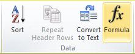

You can perform calculations and logical comparisons in a table by using formulas. The Formula command is found on the Table Tools, Layout tab, in the Data group.

A formula in Word automatically updates when you open the document that contains the formula. You can also update a formula result manually.
Select the table cell where you want your result. If the cell is not empty, delete its contents.
On the Table Tools, Layout tab, in the Data group, click Formula.
Use the Formula dialog box to create your formula. You can type in the Formula box, select a number format from the Number Format list, and paste in functions and bookmarks using the Paste Function and Paste Bookmark lists.
In Word, the result of a formula is calculated when it is inserted, and when the document containing the formula opens. In Outlook, the result of a formula is only calculated when it is inserted and won't be available for the recipient of the email to edit.
You can also manually update:
The result of one or more specific formulas
The results of all formulas in a specific table
All the field codes in a document, including formulas